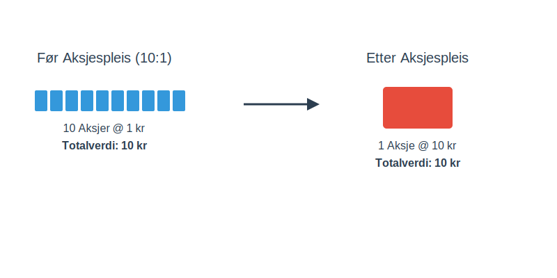

En aksjespleis, ofte kalt omvendt aksjesplitt, er en strategisk manøver et aksjeselskap kan gjennomføre for å redusere antall utestående aksjer. Dette fører til at verdien per aksje øker tilsvarende, uten at den totale verdien av aksjekapitalen endres.
Tenk på det som å bytte ti 10-kronestykker mot én 100-kroneseddel. Verdien er den samme, men antallet enheter er færre. En aksjespleis er det motsatte av en aksjesplitt, hvor man i stedet deler opp aksjer for å senke prisen per aksje.
Hvorfor gjennomfører selskaper en aksjespleis?
Det er flere grunner til at et selskap kan velge å gjennomføre en aksjespleis. Ofte er målet å gjøre aksjen mer attraktiv for investorer eller å oppfylle visse krav på en børs.
- Øke aksjekursen: En svært lav aksjekurs kan gi inntrykk av at selskapet er i trøbbel eller av lav kvalitet. Ved å “spleise” aksjene, øker kursen per aksje, noe som kan forbedre selskapets image og tiltrekke seg større, institusjonelle investorer.
- Krav fra børsen: Noen børser har minimumskrav til aksjekursen for å kunne være notert. En aksjespleis kan være nødvendig for å unngå å bli strøket fra listen.
- Redusere volatilitet: Aksjer med svært lav kurs (såkalte “penny stocks”) kan være utsatt for store prosentvise svingninger. En høyere aksjekurs kan bidra til mer stabilitet.
- Administrativ forenkling: Å redusere antall aksjer kan forenkle administrasjonen og redusere kostnader knyttet til aksjonærregisteret.

Hvordan fungerer en aksjespleis i praksis?
Prosessen for en aksjespleis er regulert av Aksjeloven. Beslutningen må tas i selskapets generalforsamling med tilstrekkelig flertall.
La oss se på et eksempel:
Et selskap, “Tech Invest AS”, har 10 000 000 utestående aksjer med en kurs på 0,50 kr per aksje. Selskapets totale markedsverdi er 5 000 000 kr.
Styret ønsker en høyere aksjekurs og foreslår en aksjespleis i forholdet 10:1. Det vil si at 10 gamle aksjer slås sammen til 1 ny aksje.
Før aksjespleis:
| Egenskap | Verdi |
|---|---|
| Antall aksjer | 10 000 000 |
| Pålydende per aksje | 0,10 kr |
| Kurs per aksje | 0,50 kr |
| Total markedsverdi | 5 000 000 kr |
Etter aksjespleis (10:1):
| Egenskap | Verdi |
|---|---|
| Antall aksjer | 1 000 000 (10 000 000 / 10) |
| Pålydende per aksje | 1,00 kr (0,10 kr * 10) |
| Kurs per aksje | 5,00 kr (0,50 kr * 10) |
| Total markedsverdi | 5 000 000 kr |
Som tabellen viser, er selskapets totale verdi uendret. En aksjonær som eide 1000 aksjer verdt 500 kr før spleisen, vil eie 100 aksjer verdt 500 kr etter spleisen.
Hva skjer med brøkaksjer?
En utfordring med aksjespleis er at noen aksjonærer kan ende opp med et antall aksjer som ikke er delelig med spleiseforholdet. Dette resulterer i brøkaksjer.
Hvis en aksjonær eier 15 aksjer i vårt eksempel med en 10:1 spleis, ville vedkommende fått 1,5 nye aksjer. Siden man ikke kan eie en halv aksje, blir slike overskytende aksjer vanligvis tvangsinnløst og utbetalt til aksjonæren. Detaljene for dette skal være beskrevet i innkallingen til generalforsamlingen.
Fordeler og ulemper med aksjespleis
| Fordeler | Ulemper |
|---|---|
| Forbedret image og troverdighet | Kan signalisere at selskapet har hatt problemer |
| Tiltrekker seg institusjonelle investorer | Endrer ikke de underliggende økonomiske forholdene |
| Oppfyller børskrav | Kan føre til tvangsinnløsning for småaksjonærer |
| Redusert kursvolatilitet | Ingen garanti for at kursen vil holde seg oppe |
Konklusjon
En aksjespleis er et verktøy selskaper kan bruke for å justere aksjestrukturen sin. Det er en ren kosmetisk endring som ikke i seg selv skaper verdi, men som kan ha psykologiske og administrative fordeler. For en investor er det viktig å forstå at en aksjespleis ikke endrer den fundamentale verdien av investeringen, men det kan være et signal om selskapets strategi og fremtidsutsikter. Det er alltid lurt å undersøke hvorfor selskapet gjennomfører spleisen før man tar videre beslutninger.